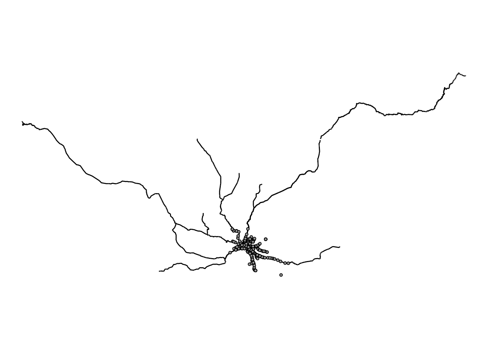
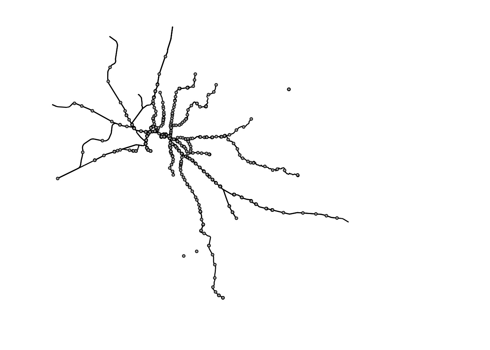
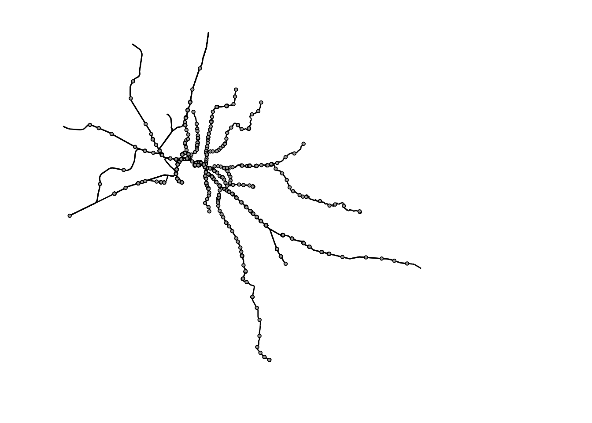
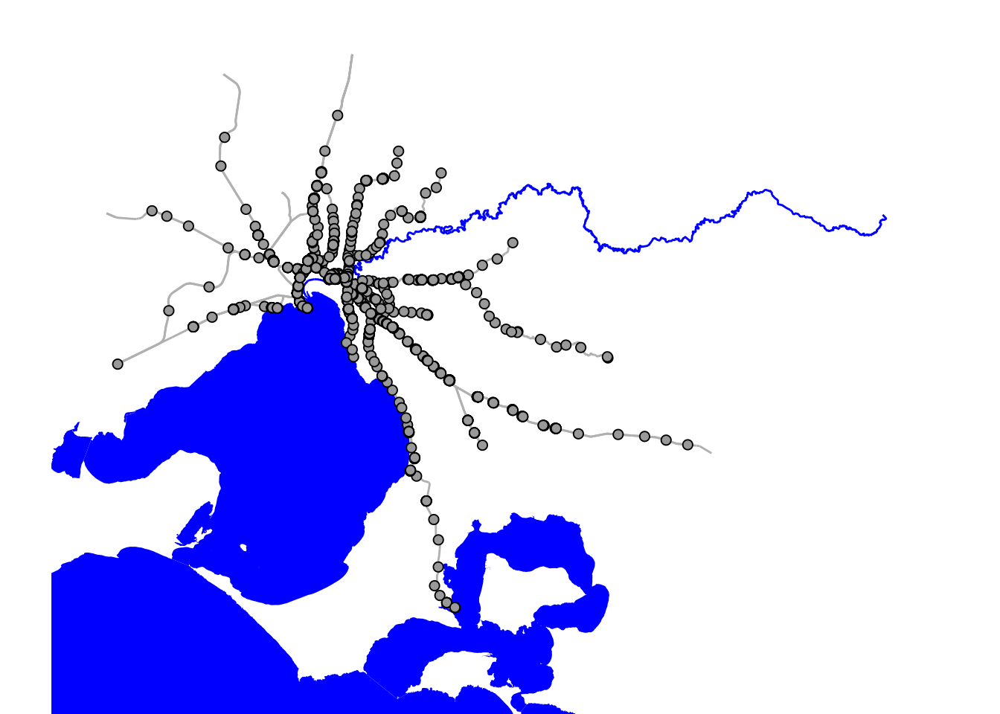
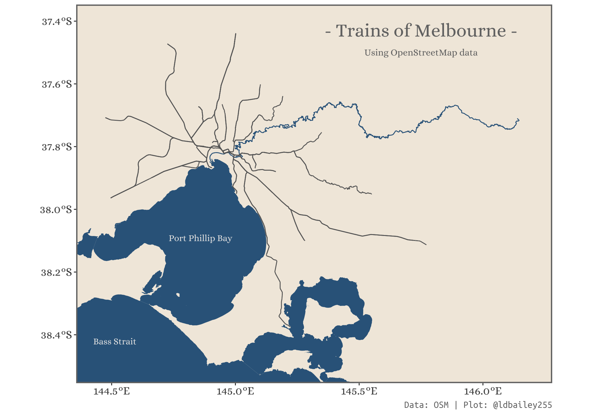

library(osmdata)
library(sf)
library(ggplot2)
library(dplyr)
library(ggplot2)Where are the shapefiles?!
When I first started making maps and doing spatial analyses in R I often encountered a problem finding the data I needed. Where could I find a line showing state borders or a polygon of a nearby river? There are of course a huge number of ways to source this type of information, but for a beginner (and even sometimes as somebody more experienced) it can be difficult to keep track of all the different data sources. That’s why I was so excited to find out about the osmdata package that allows you to query OpenStreetMap data directly in R. Access to an almost unlimited amount of spatial information from across the globe, what’s not to like?!
To show off the power of OpenStreetMap data I’ll build a train map of Melbourne (my home town). Here’s what we’ll need:
osmdata: For querying OpenStreetMapggplot2: For plotting the information we extractsf: For working with spatial data in Rdplyr: For data wrangling
Creating a query
The first step is to specify the area within which we want to search for OpenStreetMap features. We can specify the latitude and longitude limits manually, but you can also use the getbb() function to return the limits of a particular place (e.g. a city).
#Example of a bounding box for Melbourne
#It's often necessary to specify the greater city limit to ensure the
#bounding box is large enough
melb_bb <- getbb(place_name = "Melbourne, Australia")
melb_bb min max
x 144.44405 146.19250
y -38.49937 -37.40175Then we can use the opq() function to start querying the OpenStreetMap API. You can build the query using pipes.
The first thing we’ll want to add to the query is the type of feature we want to return with add_osm_feature(). There are a lot of possible objects we could extract from OpenStreetMap. In this case we want to find train lines and stations. The key-value pair to use is not always obvious (e.g. a cycle path is under the ‘highway’ key), so you may want to explore different key-value pairs here or search for specific features on Nominatim.
TIP: If you’re querying over a large area it can be good to increase the timeout argument from the default 25.
#Query railway lines
melb_query_line <- opq(bbox = melb_bb, timeout = 120) %>%
add_osm_feature(key = 'route', value = 'train')
melb_query_station <- opq(bbox = melb_bb, timeout = 120) %>%
add_osm_feature(key = 'railway', value = 'station')
melb_query_line$bbox
[1] "-38.49937,144.44405,-37.40175,146.1925"
$prefix
[1] "[out:xml][timeout:120];\n(\n"
$suffix
[1] ");\n(._;>;);\nout body;"
$features
[1] "[\"route\"=\"train\"]"
$osm_types
[1] "node" "way" "relation"
attr(,"class")
[1] "list" "overpass_query"
attr(,"nodes_only")
[1] FALSEExtracting some data
We now have a query for the OpenStreetMap Overpass API…but we still need to run the query and return the spatial data! For this we can use osmdata_sf() to return information as sf objects (or osmdata_sp() if you’re working with the sp package).
melbourne_trainline <- melb_query_line %>%
osmdata_sf()
melbourne_station <- melb_query_station %>%
osmdata_sf()
melbourne_trainlineObject of class 'osmdata' with:
$bbox : -38.49937,144.44405,-37.40175,146.1925
$overpass_call : The call submitted to the overpass API
$meta : metadata including timestamp and version numbers
$osm_points : 'sf' Simple Features Collection with 50231 points
$osm_lines : 'sf' Simple Features Collection with 4258 linestrings
$osm_polygons : 'sf' Simple Features Collection with 338 polygons
$osm_multilines : 'sf' Simple Features Collection with 158 multilinestrings
$osm_multipolygons : NULLWe now have a whole range of objects (lines, points, and polygons), that fit our specific key-value pairs. We can already use these data to create a basic map with train lines and stations!
melbourne_trainline_lines <- melbourne_trainline$osm_lines
melbourne_station_points <- melbourne_station$osm_points
ggplot() +
geom_sf(data = melbourne_trainline_lines, size = 1, colour = "black") +
geom_sf(data = melbourne_station_points, size = 1, shape = 21, colour = "black", fill = "dark grey") +
theme_void()
Tidying up OSM data
This doesn’t look quite right! Although we queried within the greater Melbourne area, the lines and polygons can extend outside this bounding box. We can deal with this a number of ways. Here we’ll use a combination of trim_osmdata() from within osmdata to clip our lines and the coord_sf() function to adjust the limits of plot to match the bounding box of Melbourne we’ve been using.
melb_bb_poly <- getbb(place_name = "Melbourne, Australia",
format_out = "sf_polygon") %>%
#There are two very similar bounding boxes. We'll use the first one.
slice(1)
melbourne_trainline_lines <- melbourne_trainline_lines %>%
sf::st_filter(melb_bb_poly)
#Use exclude = FALSE to include lines that partially overlap our boundaries
# trim_osmdata(bb_poly = melb_bb_poly, exclude = FALSE)
melbourne_station_points <- melbourne_station_points %>%
sf::st_filter(melb_bb_poly)
# trim_osmdata(bb_poly = melb_bb_poly, exclude = FALSE)
# melbourne_trainline_lines <- melbourne_trainline_trim$osm_lines
# melbourne_station_points <- melbourne_station_trim$osm_points
ggplot() +
geom_sf(data = melbourne_trainline_lines, size = 1, colour = "black") +
geom_sf(data = melbourne_station_points, size = 1, shape = 21, colour = "black", fill = "dark grey") +
theme_void() +
coord_sf(xlim = melb_bb[1, ], ylim = melb_bb[2, ])
Using OpenStreetMap gives us access to a huge source of spatial information, but because the data is created by a community of volunteers it can often require some cleaning. In our case, we can see there are a few stations that do not have corresponding train lines. This may occur because the train lines have been stored with a different key-value combination or are stored as a different object type, such as a polygon. For now, we will only include stations that are close (less than 1km) from a train line.
Note: We do not use overlap because this will require points to sit exactly on the lines, which will often not occur due to things such as measurement error in the point locations.
#For each station, determine the distance to all train lines
min_dist <- sf::st_distance(melbourne_station_points,
melbourne_trainline_lines) %>%
#Determine the minimum distance for each station
apply(MARGIN = 1, FUN = min)
melbourne_station_points_subset <- melbourne_station_points %>%
dplyr::mutate(dist = min_dist) %>%
dplyr::filter(dist <= 1000)
ggplot() +
geom_sf(data = melbourne_trainline_lines, size = 1, colour = "black") +
geom_sf(data = melbourne_station_points_subset, size = 1, shape = 21,
colour = "black", fill = "dark grey") +
theme_void() +
coord_sf(xlim = melb_bb[1, ], ylim = melb_bb[2, ])
Filtering by name
We now have a cleaned dataset of trainlines and stations within greater Melbourne, now we can work to make this map more informative by adding other features, like rivers and water bodies. We can also source this information from OpenStreetMap.
We want to add the Yarra river the bays and ocean around Melbourne to our map. Rivers can be found using the waterway-river key pair, but we need to apply additional filters to make sure we don’t get all rivers in Melbourne. To do this, we can apply a second filter with add_osm_feature() to search for objects with a specific name. By using value_exact = FALSE we allow for possible spelling differences in the name of the objects. Looking at Nominatim, we can see that the water bodies near Melbourne are all encompassed by the ‘Bass Strait’ multi-polygon (found with the natural-strait key pair).
bass_strait <- opq(bbox = melb_bb, timeout = 240) %>%
add_osm_feature(key = 'natural', value = 'strait') %>%
add_osm_feature(key = "name", value = "Bass Strait", value_exact = FALSE) %>%
osmdata_sf()
bass_strait_polygon <- bass_strait$osm_multipolygons
bays <- opq(bbox = melb_bb, timeout = 240) %>%
add_osm_feature(key = 'natural', value = 'bay') %>%
osmdata_sf()
bays_polygon <- bays$osm_multipolygons
yarra <- opq(bbox = melb_bb, timeout = 240) %>%
add_osm_feature(key = 'waterway', value = 'river') %>%
add_osm_feature(key = "name", value = "Yarra River", value_exact = FALSE) %>%
osmdata_sf()
yarra_line <- yarra$osm_multilines
ggplot() +
geom_sf(data = bass_strait_polygon, fill = "blue", colour = NA) +
geom_sf(data = bays_polygon, fill = "blue", colour = NA) +
geom_sf(data = yarra_line, colour = "blue", size = 1.5) +
geom_sf(data = melbourne_trainline_lines, size = 1, colour = "gray") +
geom_sf(data = melbourne_station_points_subset, size = 2, shape = 21,
colour = "black", fill = "dark grey") +
theme_void() +
coord_sf(xlim = melb_bb[1, ], ylim = melb_bb[2, ])
Making things pretty
We now have the data we need to create a nice looking map of the Melbourne metro-train network. We can add some nice aesthetic touches to make it look nicer. For this we’ll load some packages:
showtext: Adding custom fonts from Google fonts
library(showtext)
font_add_google("Alice", "Alice")
font_add_google("Ubuntu Mono", "Ubuntu Mono")
showtext_auto()ggplot() +
geom_sf(data = bass_strait_polygon, fill = "#33658A", colour = NA) +
geom_sf(data = bays_polygon, fill = "#33658A", colour = NA) +
geom_sf(data = yarra_line, colour = "#33658A", size = 1.5) +
geom_sf(data = melbourne_trainline_lines, size = 1.2, colour = "gray40") +
#Add a label for port phillip bay and bass strait
geom_text(aes(label = "Port Phillip Bay"), x = 144.859280, y = -38.092014,
family = "Alice", fontface = "bold", colour = "grey90") +
geom_text(aes(label = "Bass Strait"), x = 144.513047, y = -38.421423,
family = "Alice", fontface = "bold", colour = "grey90") +
#Add title as text inside the plot
geom_text(aes(label = "- Trains of Melbourne -"), x = 145.75, y = -37.43,
family = "Alice", size = 8,
colour = "grey45", fontface = "bold") +
geom_text(aes(label = "Using OpenStreetMap data"), x = 145.75, y = -37.5,
family = "Alice", size = 4,
colour = "grey45", fontface = "bold") +
labs(caption = "Data: OSM | Plot: @ldbailey255") +
coord_sf(xlim = melb_bb[1, ], ylim = melb_bb[2, ]) +
theme_classic() +
theme(panel.background = element_rect(fill = "#f2eadf"),
panel.border = element_rect(fill = NA, colour = "grey45", size = 1.5),
axis.text = element_text(family = "Alice", size = 14),
plot.caption = element_text(family = "Ubuntu Mono", size = 12,
colour = "grey45"),
axis.line = element_blank())Warning: The `size` argument of `element_rect()` is deprecated as of ggplot2 3.4.0.
ℹ Please use the `linewidth` argument instead.